Your calls, handled
while you’re busy.
Personal Agent screens your calls while you’re busy, spots what’s urgent, and acts on your behalf. I designed how people set it up, stay in control mid-call, and review what it did.
All UI shown in this case study was presented publicly at WebexOne 2026.
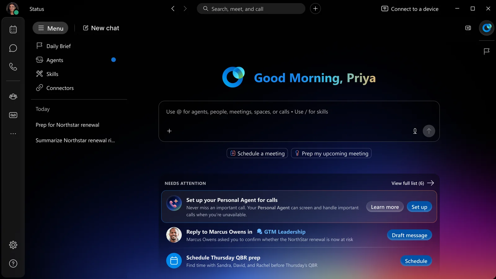
What is this project?
Webex Calling + Personal Agent
Personal Agent is an AI agent for an individual employee. When you can’t pick up, it answers your calls, works out who’s calling and why, flags what’s urgent, and takes action, like taking a message or booking a follow-up.
It was announced at WebexOne 2026. Unlike AI Receptionist, which an admin sets up for a whole business, Personal Agent is set up by the person whose calls it handles.
My Role
Draft — confirm role, partners, and dates
I designed the Personal Agent experience for calling, end to end: from the first setup conversation, to the moment an urgent call interrupts a meeting, to reviewing what the agent did afterwards.
- →Guided setup inside the Webex AI assistant
- →Screening rules, actions, and urgency
- →Greeting and voice for callers
- →Urgent call alert with live transcript
- →Call history, recaps, and handled-call review
The Problem in One Sentence
Important calls get missed while people are in meetings, and nobody can tell which missed call actually mattered.
TL;DR
Before
- Calls go to voicemail while you’re busy
- No way to tell urgent from routine
- Callers wait, or give up
- Follow-up is all on you
- A missed call is just a missed call
After
- An agent answers when you can’t
- Urgent calls reach you, with context
- Callers get a message taken or a time booked
- Action items land in one place
- Every handled call has a recap
The shape of the work, before you read the story.
Answered in a chat, not a settings page.
No code, no admin needed.
Setup, the urgent call, and the review.
Setup is a conversation.
Guided setup in the Webex AI assistant
Personal Agent is set up by everyday employees, not admins. A dense settings page would ask them to think like a phone-system admin before they’d trust an AI with their calls.
The design decisionStart setup from a single prompt in the Webex AI assistant. The agent explains what it can do, then walks through 3–5 short questions as cards in the chat, each one answerable in a tap.
- Sets expectations up front: 3–5 questions, under 5 minutes
- One question per card, with clear Step labels
- Every card also takes free text or voice for extra instructions
- Back and Next keep the flow reversible
Trade-off → Structured cards keep answers precise; the open text field keeps room for what the options don’t cover. Each card has both.
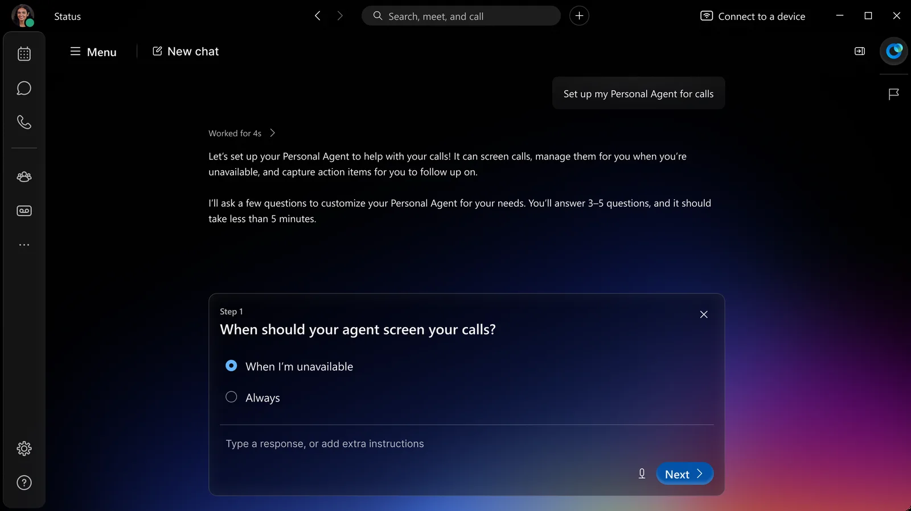
Five questions before it answers for you.
Each step answers one thing a person needs to settle before letting an agent pick up their phone. Together they define when it acts, what it may do, and how it represents them.
Step 01
When it steps in
- Always, or only when I’m busy?
Step 02
Unavailable
- What does “busy” mean for me?
Step 03
What it can do
- Which actions may it take?
Step 04
What’s urgent
- Who and what should reach me?
Step 05
How it sounds
- What will callers hear?
Busy means what you already say it means.
Screening rules
“Screen my calls when I’m unavailable” is easy to say and hard to define. Inventing a new set of rules would mean people configure their availability twice.
The design decisionAsk first whether the agent should screen always or only when unavailable, then define “unavailable” using the Webex statuses people already set every day: in a meeting, on a call, Busy, Do Not Disturb, Away, Quiet hours, or Inactive.
Trade-off → Reusing presence states means fewer new concepts, but the agent is only as accurate as the person’s status. Meetings and calls are detected automatically to cover the most common gaps.
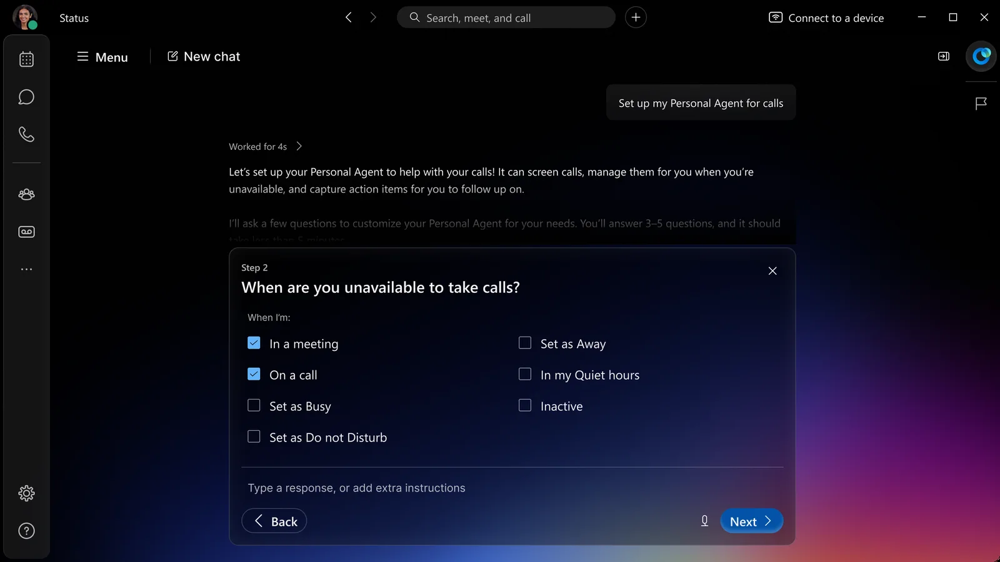
Show what it will touch.
Agent actions
An agent that acts on your behalf can schedule meetings and write to your systems. People need to see exactly which actions and which apps are involved before they say yes.
The design decisionList each action in plain language, and show the connected app right beside it, so the permission and the tool are one decision instead of two.
Notify
Flag urgent calls
Alert me with who is calling and why, so I can decide to pick up.
Follow up
Take a message, book a time
Take a message, or schedule a follow-up through the connected calendar.
Record & answer
Log details, answer questions
Capture caller details in the CRM, and answer from a knowledge base I upload.
Trade-off → Actions that need a connection or a knowledge base show what’s missing inline, so they can be turned on later without leaving setup.
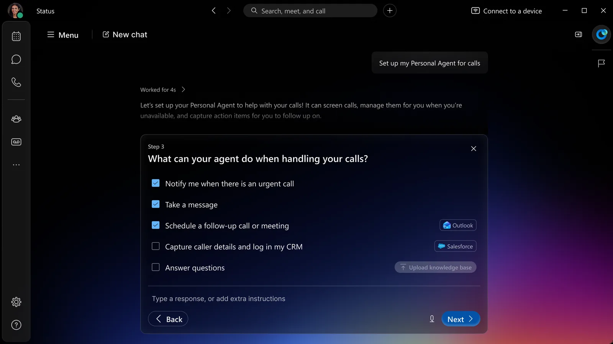
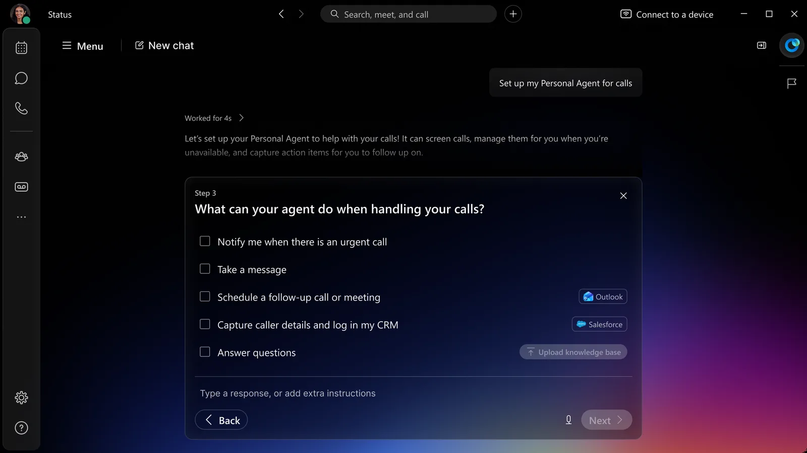
Urgency is detected, then tuned.
Urgency rules
Every call can’t be urgent, but people shouldn’t have to write rules for every case either. The agent needed sensible defaults and a light way to add what only the person knows.
The design decisionThe agent detects urgency on its own, such as a caller saying it’s urgent or mentioning a deadline. People can optionally add specific callers and keywords on top.
- Default: automatic urgency detection, explained in one line
- Add specific people from the directory
- Add keywords, like a project name
- Nothing selected? The button reads Skip instead of Next
Trade-off → Making this step skippable keeps setup short; the default detection still works without any extra rules.
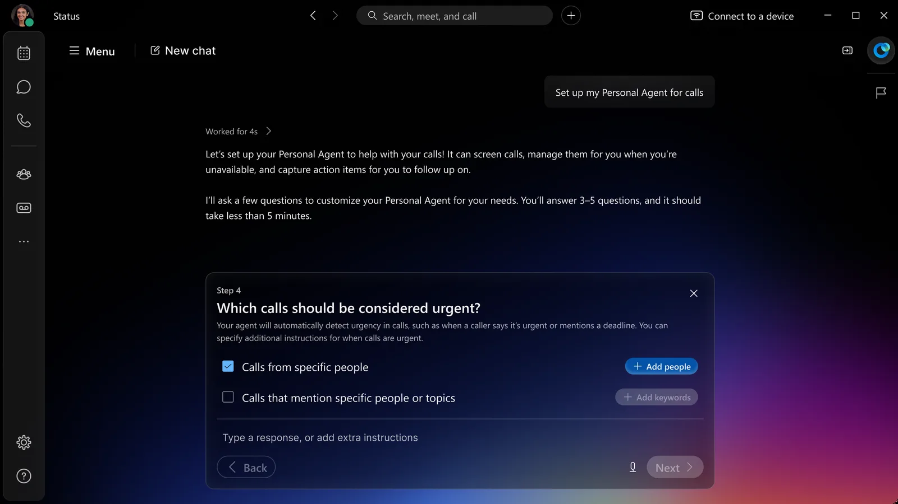
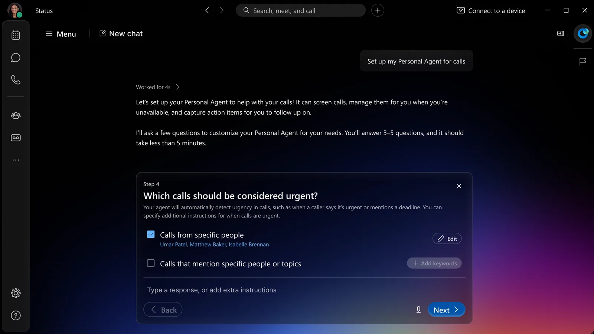
Callers meet your agent first.
Greeting and voice
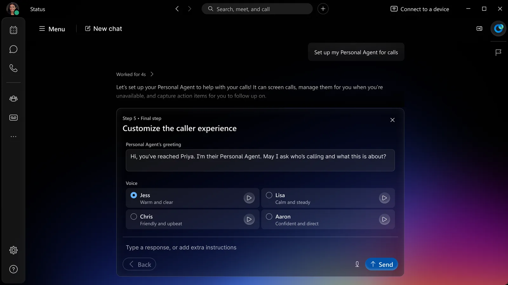
The agent speaks for the person. Callers need to know right away they’re talking to an agent, and the person needs to be comfortable with how it sounds.
The design decisionPrefill an honest greeting that names the person and introduces the agent, then offer a short set of voices, each with a one-line personality and a play button to preview.
- Greeting is editable but never blank
- Four voices, described by tone, not by tech
- Preview before choosing
- Send completes setup
Trade-off → A small, curated voice set is easier to choose from than a long list, at the cost of less choice.
Show the plan before it acts.
Setup summary
After five answers, people need to see the whole picture in one place, and hear it, before an agent starts picking up their calls.
The design decisionThe agent shows its work as it reviews the setup, then plays back every choice in a single summary card with one Edit entry point, a Confirm button, and a Preview test call.
Trade-off → An extra confirm step adds a click, but no one goes live without seeing exactly what they agreed to.
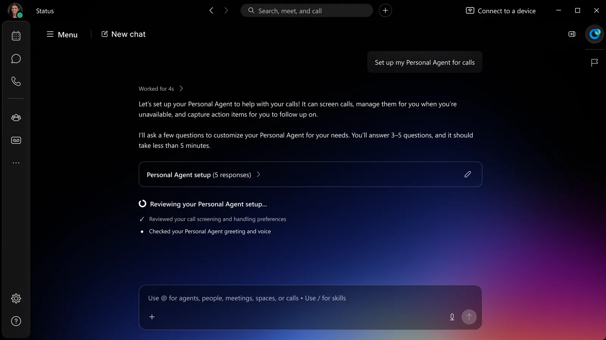
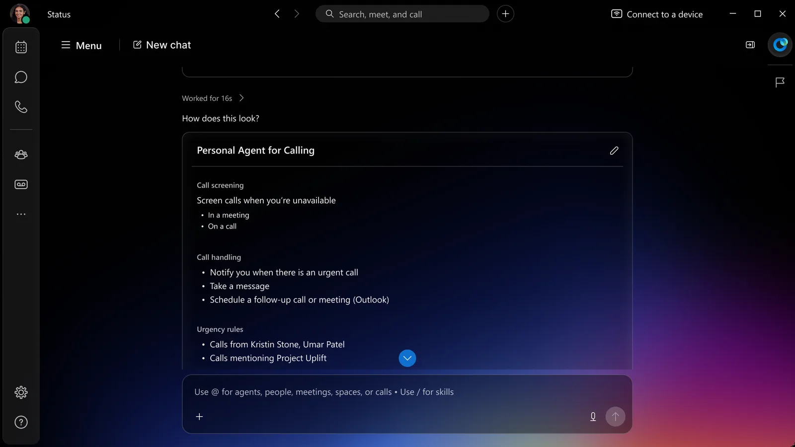
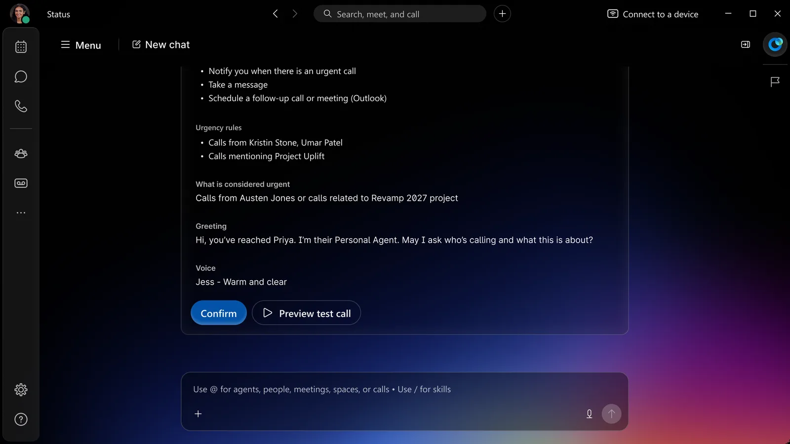
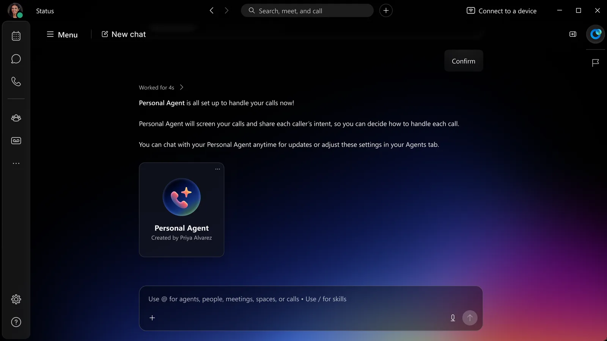
An urgent call, mid-meeting.
Urgent call alert
When an urgent call arrives during a meeting, the person has seconds to decide. A plain ringing phone gives them nothing to decide with.
The design decisionTurn the incoming call into a live view of the agent’s conversation, so the person can read who’s calling and why, then answer, decline, or steer the agent without leaving the meeting.
- “Urgent call” label and caller identity up top
- Live transcript of the agent and caller
- Quick actions: schedule a follow-up, ask for more info
- “Instruct agent…” to relay a message in your own words
The philosophy → Answer and decline stay one tap away, so the agent never stands between the person and their caller.
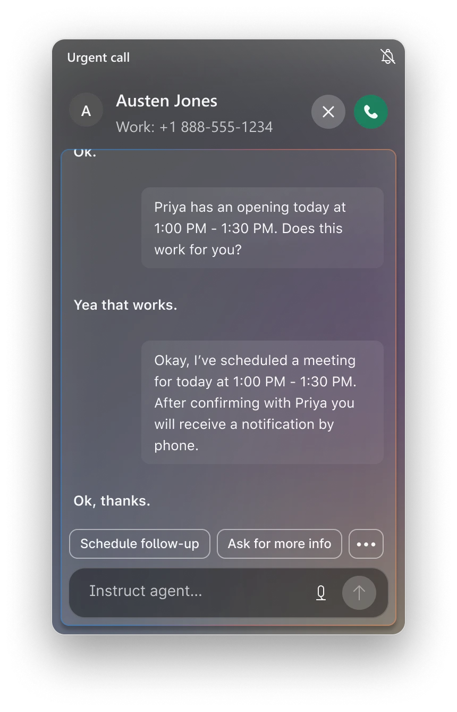
Every handled call leaves a trail.
Recaps, history, and review
If the agent handles calls quietly, people lose track of what was promised on their behalf. Trust depends on being able to check its work.
The design decisionReport back in the places people already look: a notification when they’re free again, labels in call history, a recap with action items on each call, and a chat summary of everything handled.
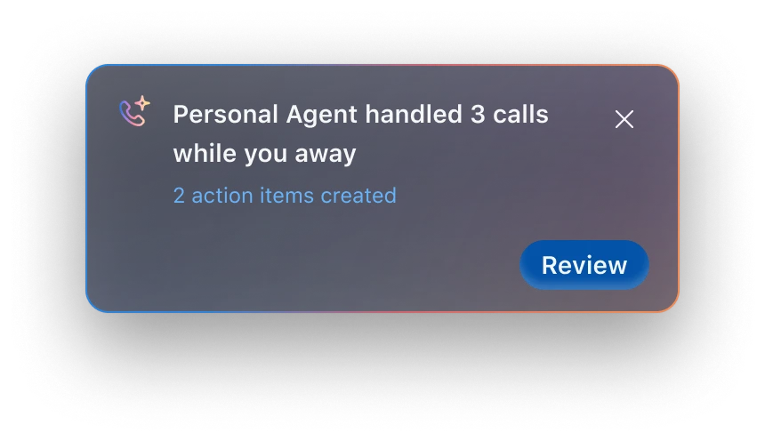
Back from the meetingOne notification sums up how many calls were handled and how many action items were created, with a single Review button.
Why it matters → Batched updates instead of one alert per call. Only urgent calls interrupt; everything else waits for a natural break.
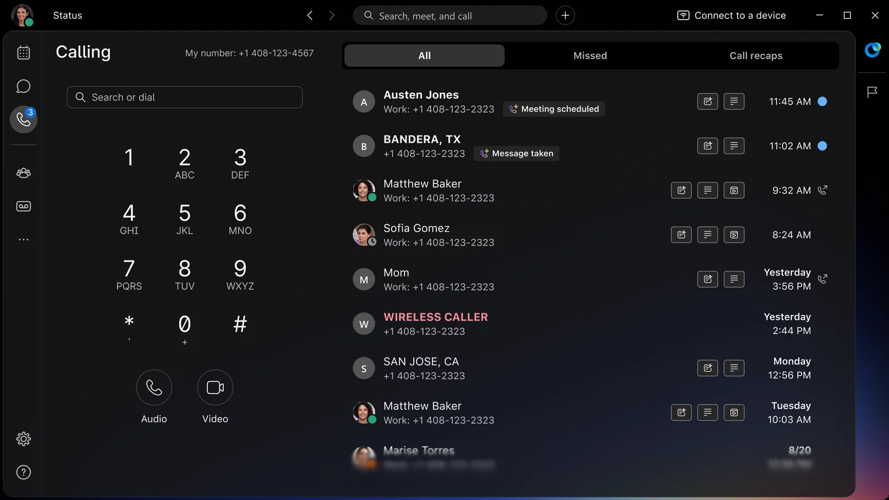
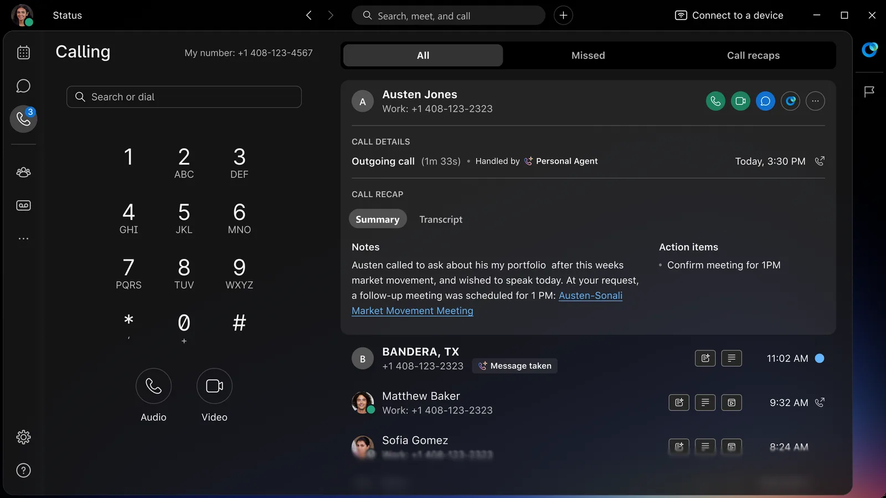
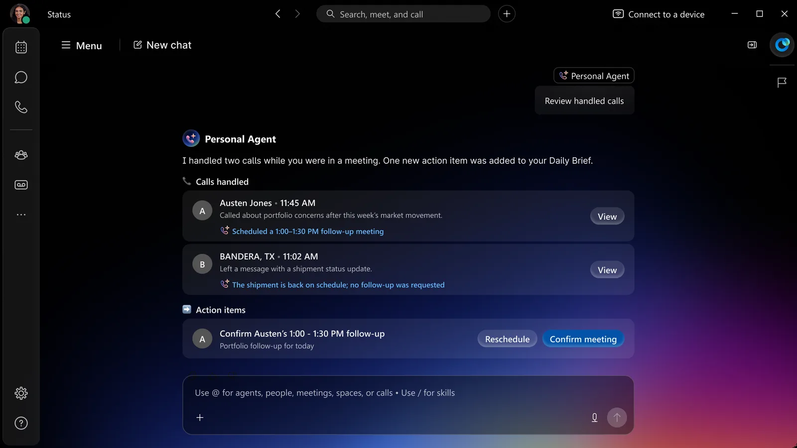
How I thought about an agent that speaks for you.
01
Set up in a conversation
A few questions in chat replace a settings page, and every answer stays editable.
02
Use states people already know
“Unavailable” reuses Webex statuses instead of inventing new rules.
03
Show what it will touch
Each action names the app it uses, before it’s turned on.
04
Keep the person in the loop
Urgent calls interrupt with context, and the person can answer or instruct the agent at any time.
05
Every action leaves a trail
Labels, recaps, and action items show exactly what was done on the person’s behalf.
Draft — add validation and results
From WebexOne stage to shipping.
Personal agents for Webex Calling were announced at WebexOne 2026, with availability planned for the first half of calendar 2027.
Add a line on how you validated the design, for example usability sessions or early feedback.
Status — Personal Agent
What’s next
Personal Agent extends the same agent technology behind Webex AI agents to each employee’s own calls.
Before → After
Voicemail
What callers get when you’re busy
A real answer
A message taken or a time booked
Ignore or interrupt
Your choice mid-meeting
Decide with context
Who’s calling, why, and how urgent
Missed call
What you find afterwards
Handled call
A recap with action items
Human impact.
Employees
Focus without missing out
They stay in their meeting, knowing the calls that matter will still reach them.
Callers
Heard, not sent to voicemail
They explain what they need and leave with a next step.
Teams
Fewer dropped follow-ups
Action items from every handled call land in one place.
To comply with my non-disclosure agreement, I’ve omitted research data, internal roadmap details, and screens containing confidential information from this case study.
Busy shouldn’t mean unreachable.
An agent that answers for you, knows what matters, and always tells you what it did.